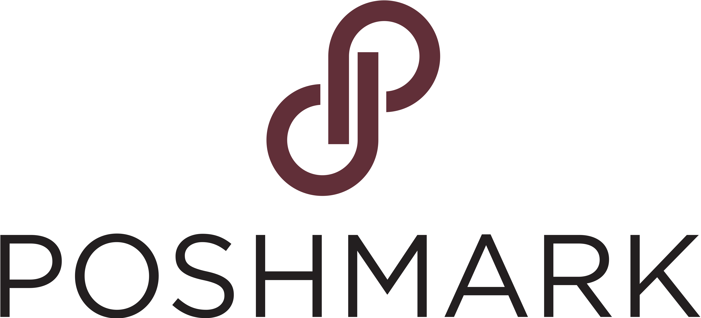

Product · Pitch · UX
Gowncard
A product concept packaged as a pitch deck, focused on clear positioning, user value, and a crisp launch story.
Open deck ↗Work area
A compact archive for case studies, prototypes, visual systems, and deck-based work. Replace the short notes here with final case study copy whenever you are ready.

A product concept packaged as a pitch deck, focused on clear positioning, user value, and a crisp launch story.
Open deck ↗
A long-form page direction exploring structure, rhythm, and a warmer visual identity for a content-heavy experience.
View mockup ↗
A poster-scale visual piece that can become a case study around concept, composition, and narrative design.
Open visual ↗